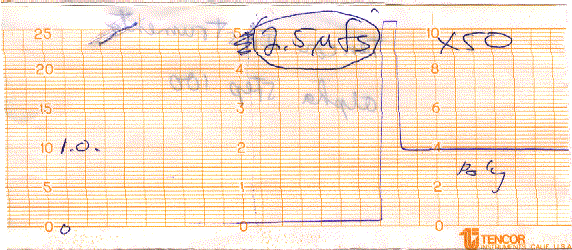
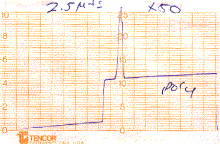
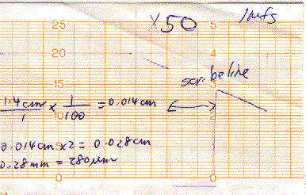
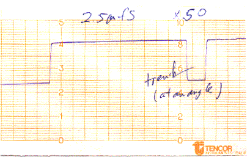

Week #4: Annealing and Polysilicon Gate Definition (Oct 24, 1995)
- A. RCA rinse of 3 good wafers with Si deposit (E, B, 3)
- 1) Lost wafer D due to pealing of deposited Si
- 2) 3 wafers without numbers have just gate field oxide
- 3) wafers 1,2,4,5,6, A and C have just gate field oxides too
- B. Measured the Thickness of Deposited Silicon
- 1) Used Alpha Step 100 (Tencor Instruments)
- 2) Measured Thickness at edge of deposit at several locations (avg thickness = 1 um)
- Location #1: (Note Deflection is curl at edge of Si deposit)

- Location #2: (Note Deflection is curl at edge of Si deposit)

- 3) Also measured Width of Scribeline (280 um)

- 4) Finally, measured Depth of Trench at Any Angle

- C. Two Hour Anneal (convert amorphous Si to poly)
- 1) For 5 minutes, the oxidizer chamber was flushed with Argon at 10 CFH
- 2) Load the 3 wafers E,B,3 into the oven and flush for 10 minutes with Argon at 10 CFH
- 3) Heat for TWO hours at 800C with Argon flow at 2 CFH
- 4) Turn off heat -> temperature drops to 400C
- 5) 1 hour later, SLOWLY pull out the tray over 45 min period (open oven door after 35 min)
- 6) Finally, remove wafers and let sit at room temperature
- D. Wednesday group's work (need to add)...